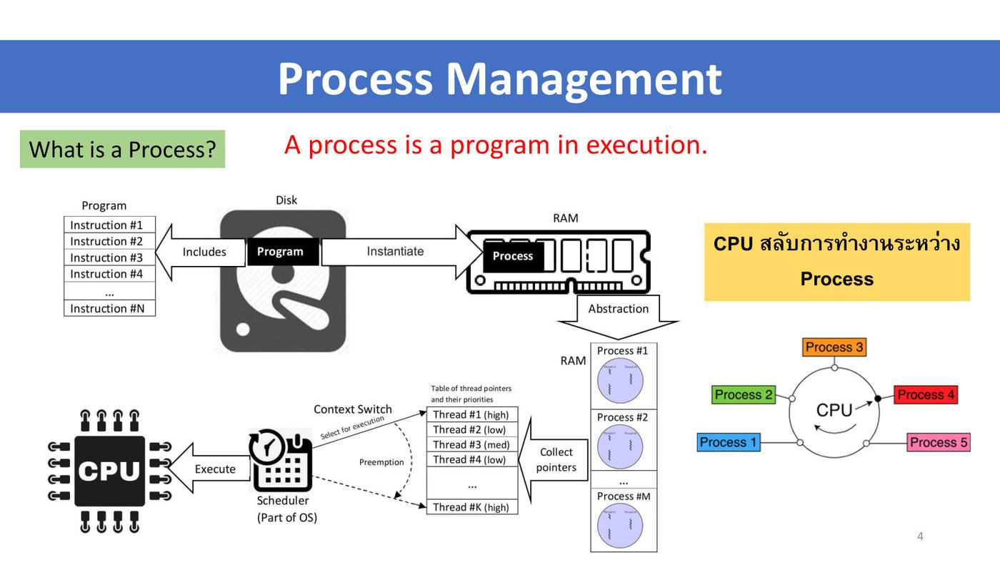
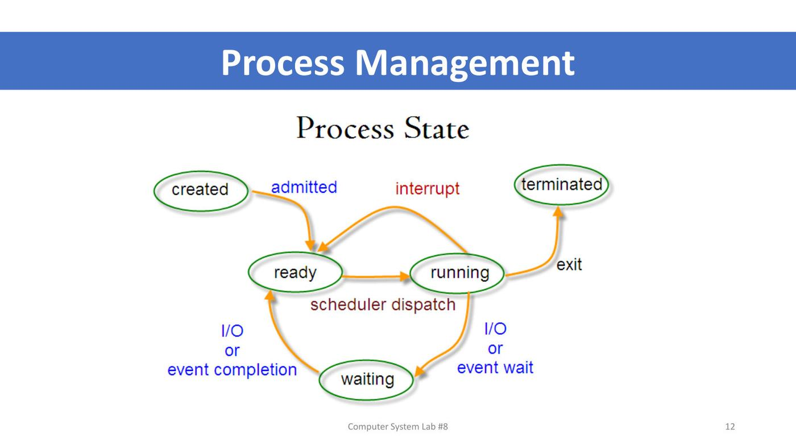
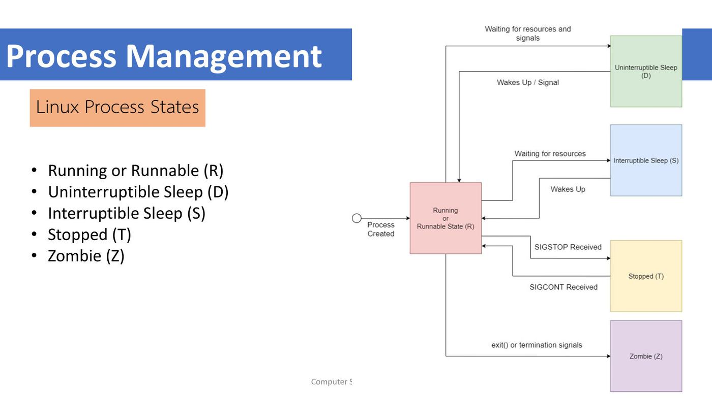
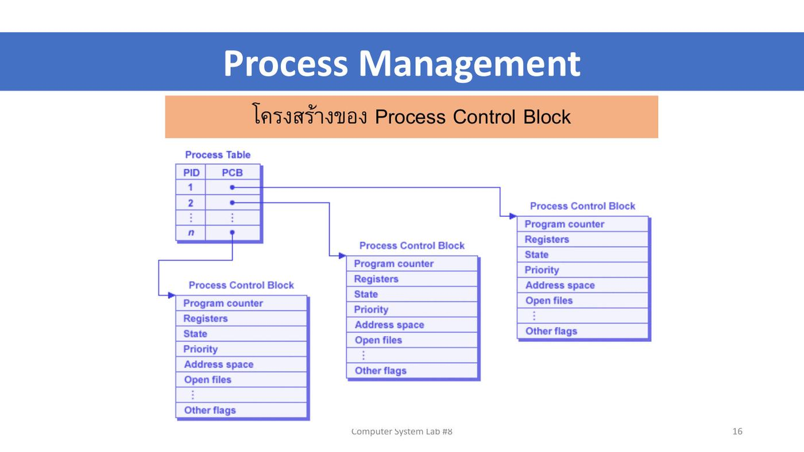
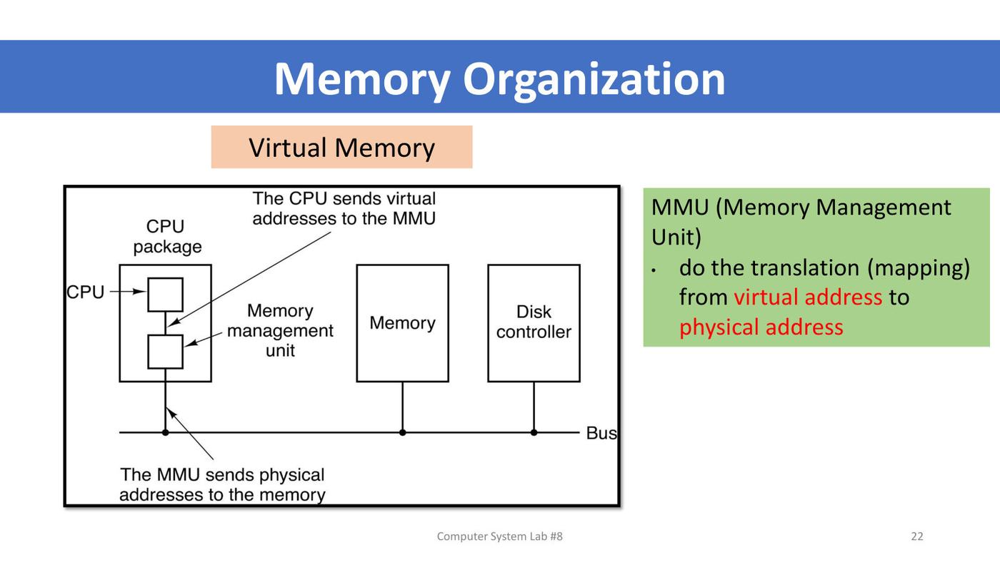
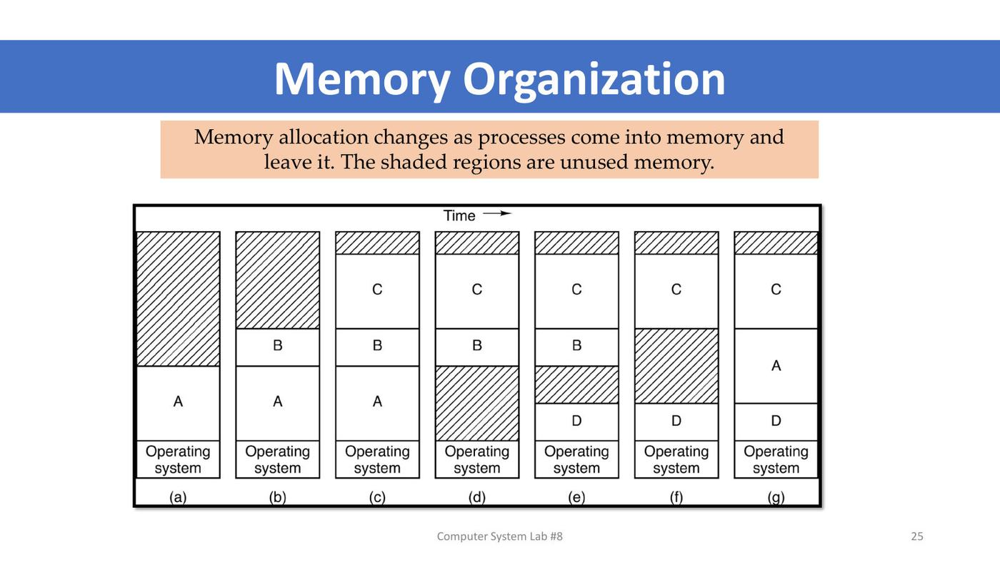

ภาพรวมบทนี้ ต่อยอดจาก L2 ที่บอกว่า OS "virtualize CPU และ memory" บทนี้ลงมือดูของจริง
(1) Lecture 8 ส่วน Process: process คืออะไร, parent/child และ process tree, คำสั่ง
ps,ps -f,ps -aux,top, สถานะของ process (R, D, S, T, Z), foreground/background (&,fg), Process Control Block,kill, และการปรับความสำคัญด้วยnice/renice(2) Lecture 8 ส่วน Memory:
systeminfoบน Windows, ลำดับชั้นหน่วยความจำ, virtual memory และ MMU, การจัดสรรหน่วยความจำให้ process, และคำสั่งดู memorytop,free,vmstat,/proc/meminfo(3) Lab 8 ฝึกทุกคำสั่งและตอบคำถามจากผลที่ได้
ส่วนที่ 1 — Lecture 8: Process Management
1. ข้อมูลรายวิชา (ย่อ)
- สัปดาห์ที่ 8 = การฝึกใช้คำสั่งเกี่ยวกับ process (สัปดาห์ 9 = memory และการจัดการสภาพแวดล้อม) · เกณฑ์คะแนนเหมือนเดิม · ส่งแลป 23.59 น. · ทดสอบย่อยทุกสัปดาห์
2. Process คืออะไร ⭐⭐
A process is a program in execution. — process คือโปรแกรมที่กำลังทำงานอยู่

- Program = ชุดคำสั่ง (Instruction #1 … #N) ที่เก็บอยู่บน Disk
- เมื่อสั่งรัน โปรแกรมถูก Instantiate (สร้างเป็นตัวจริง) ขึ้นมาใน RAM กลายเป็น Process (ใน RAM มีได้หลาย process: Process #1, #2, …, #M)
- แต่ละ process มี thread (Thread #1 high, #2 low, #3 med, …) พร้อมลำดับความสำคัญ
- Scheduler (ส่วนหนึ่งของ OS) เลือก thread ไป Execute บน CPU · สลับด้วย Context Switch และแย่ง CPU คืนได้ด้วย Preemption
- ⭐ CPU สลับการทำงานระหว่าง process (Process 1–5 วนรอบ CPU)
💡 (อธิบายเพิ่ม) Program = สูตรอาหารในหนังสือ (อยู่เฉย ๆ บนดิสก์) · Process = การทำอาหารตามสูตรที่กำลังเกิดขึ้น (ใช้ครัว ใช้วัตถุดิบ ใน RAM) · เปิดโปรแกรมเดียวกัน 2 หน้าต่าง = 2 process
3. ps และ Parent / Child process ⭐
ps (process status) ใช้ตรวจสอบสถานะของ process
$ ps
PID TTY TIME CMD
2245 pts/0 00:00:00 bash
4160 pts/0 00:00:00 ps
- bash is a shell — terminal ที่เปิดอยู่คือ process
bash - เมื่อพิมพ์
psใน bash → bash สร้าง processpsขึ้นมา - Bash (PID 2245) = Parent process · ps (PID 4160) = Child process
โครงสร้าง Process Tree
process สร้าง process ลูกต่อ ๆ กันเป็นต้นไม้ เช่น Process 12274 → 12276 → (12277, 12278) → (12279, 12280) → (12283, 12282, 12284, 12281)
💡 (อธิบายเพิ่ม) ต้นสุดของต้นไม้คือ PID 1 (init / systemd) ที่ kernel สร้างตอน boot (L7) · ดูเป็นต้นไม้ได้ด้วย
pstree
4. ps -f, ps -aux และคอลัมน์ ⭐⭐
ps -f (full format) แสดง parent & child processes
$ ps -f
UID PID PPID C STIME TTY TIME CMD
sudsang+ 2245 2235 0 14:35 pts/0 00:00:00 bash
sudsang+ 5414 2245 0 21:38 pts/0 00:00:00 ls --color=auto -l
sudsang+ 5415 2245 0 21:38 pts/0 00:00:00 more
sudsang+ 5416 2245 0 21:38 pts/0 00:00:00 ps -f
→ ls (5414), more (5415), ps (5416) มี PPID = 2245 จึงเป็น child processes ของ bash (2245) = parent
| คอลัมน์ | ความหมาย |
|---|---|
| UID | user ID (เจ้าของ process) |
| PID | Process ID |
| PPID | Parent process ID |
| C | CPU utilization ของ process |
| STIME | start process time |
| TTY | terminal type (pts/0 = terminal, ? = ไม่ผูกกับ terminal) |
| TIME | CPU time ที่ใช้ไป |
| CMD | Command |
คำถามในสไลด์: ps -f | grep bash จะให้ผลอะไร? (แนวคำตอบ) → แสดงเฉพาะบรรทัดที่มีคำว่า bash คือบรรทัดของ process bash และบรรทัดของ grep bash เอง (เพราะคำสั่ง grep ก็มีคำว่า bash อยู่ใน CMD)
ps -aux แสดงโปรเซสของผู้ใช้ทั้งหมดที่กำลังทำงาน รวมของ root และ service ของระบบ เช่น /lib/systemd/systemd-resolved, /usr/sbin/cron -f, /usr/sbin/NetworkManager, [card0-crtc6] (ชื่อใน [ ] = kernel thread) (อธิบายเพิ่ม: a = ทุกผู้ใช้, u = แสดงชื่อผู้ใช้และ %CPU/%MEM, x = รวม process ที่ไม่มี terminal)
5. top ⭐
จะรู้ได้อย่างไรว่า process ไหนใช้ทรัพยากรมากหรือน้อย? → โปรแกรม top
- มีคุณสมบัติคล้าย Task Manager บน Windows
- แสดง process ที่ใช้ทรัพยากรเรียงจากมากไปน้อย
- ปรับปรุงการแสดงผลต่อเนื่องทุก ๆ 3 วินาที
- บริหารจัดการทรัพยากรของ process ได้ (อธิบายเพิ่ม: เช่น กด k เพื่อ kill, r เพื่อ renice, q เพื่อออก)
ผล top ในสไลด์:
top - 21:11:26 up 6:37, 1 user, load average: 0.14, 0.12, 0.06
Tasks: 249 total, 1 running, 197 sleeping, 0 stopped, 7 zombie
%Cpu(s): 5.8 us, 0.7 sy, 0.0 ni, 93.5 id, 0.0 wa, ...
KiB Mem : 4026140 total, 917240 free, 1055332 used, 2053568 buff/cache
KiB Swap: 969960 total, 969960 free, 0 used. 2690988 avail Mem
PID USER PR NI VIRT RES SHR S %CPU %MEM TIME+ COMMAND
1803 sudsang+ 20 0 3490188 293224 100120 S 10.2 7.3 2:54.84 gnome-shell
| ส่วน | ความหมาย (อธิบายเพิ่ม) |
|---|---|
| บรรทัดแรก | เวลา, เปิดเครื่องมานานเท่าไร (up), จำนวน user, load average 1/5/15 นาที |
| Tasks | จำนวน process ทั้งหมด แยกตามสถานะ running / sleeping / stopped / zombie |
| %Cpu(s) | us = user, sy = system, ni = nice, id = idle, wa = รอ I/O |
| Mem / Swap | หน่วยความจำ (ดูหัวข้อ 15) |
| PR / NI | priority / ค่า nice (หัวข้อ 10) |
| VIRT / RES / SHR | หน่วยความจำเสมือน / ที่อยู่ใน RAM จริง / ที่ใช้ร่วม |
| S | สถานะ (R, S, I, Z, …) |
6. Process State ⭐⭐

| สถานะ | ความหมาย (อธิบายเพิ่ม) |
|---|---|
| created | เพิ่งถูกสร้าง |
| ready | พร้อมรัน รอคิวได้ CPU |
| running | กำลังใช้ CPU |
| waiting | รอ I/O หรือ event |
| terminated | จบการทำงาน |
การเปลี่ยนสถานะ (จากแผนภาพ):
- created → admitted → ready
- ready → scheduler dispatch → running
- running → interrupt → ready (โดนแย่ง CPU)
- running → I/O or event wait → waiting
- waiting → I/O or event completion → ready
- running → exit → terminated
⚠️ (อธิบายเพิ่ม) จาก waiting ต้องกลับไป ready ก่อน ไม่ได้ไป running ตรง เพราะต้องรอ scheduler เลือกอีกครั้ง
Linux Process States (ตัวอักษรในคอลัมน์ S ของ top / ps)

| ตัวอักษร | สถานะ | เข้าสถานะนี้เมื่อ |
|---|---|---|
| R | Running or Runnable | กำลังรันหรือพร้อมรัน (process created เข้ามาที่นี่) |
| D | Uninterruptible Sleep | รอทรัพยากรและสัญญาณ (เช่น I/O ดิสก์) ปลุกด้วยสัญญาณไม่ได้ → กลับ R เมื่อ Wakes Up / Signal |
| S | Interruptible Sleep | รอทรัพยากร ปลุกได้ → กลับ R เมื่อ Wakes Up |
| T | Stopped | ได้รับ SIGSTOP (เช่น กด Ctrl+Z) → กลับ R เมื่อได้ SIGCONT |
| Z | Zombie | เรียก exit() หรือได้สัญญาณ terminate แล้ว |
💡 (อธิบายเพิ่ม) Zombie = process ที่จบแล้วแต่ parent ยังไม่มารับค่าสถานะการจบ จึงยังเหลือชื่อในตาราง process (ไม่กินทรัพยากรนอกจากช่องในตาราง) · ใน
topยังมี I = idle (kernel thread ว่าง)
7. Foreground / Background Process ⭐
| ประเภท | ความหมาย |
|---|---|
| Foreground Process | process ที่ติดต่อกับ user ผ่านหน้าจอและ keyboard (terminal รอจนกว่าจะจบ) |
| Background Process | process ที่ไม่มีการ interact กับ user (terminal ใช้ต่อได้ทันที) |
สร้าง Background Process ด้วย &
$ ls -l | more &
[1] 5415 ← [job number] PID
$ ps -f
... 5414 2245 ... ls --color=auto -l
... 5415 2245 ... more
... 5416 2245 ... ps -f
[1]+ Stopped ls --color=auto -l | more
$ fg ← ดึงงานกลับมาเป็น foreground
ls --color=auto -l | more
total 1108 ...
- ใส่
&ท้ายคำสั่ง = รันเป็น background · shell ตอบ[1] 5415= job หมายเลข 1, PID 5415 moreต้องการคุยกับหน้าจอ จึงถูก Stopped เมื่ออยู่ background ·fgดึงกลับมา foreground ให้ทำงานต่อ
💡 (อธิบายเพิ่ม) PID ที่แสดงคือ PID ของคำสั่งสุดท้ายใน pipeline (more = 5415 ส่วน ls = 5414) · คำสั่งที่เกี่ยวข้อง:
jobsดูงาน background,bgสั่งงานที่หยุดให้ทำต่อใน background, Ctrl+Z หยุดงาน foreground
8. Process Control Block (PCB) ⭐

- OS มี Process Table — แต่ละแถวคือ PID กับตัวชี้ไปยัง PCB ของ process นั้น (PID 1, 2, …, n)
- PCB เก็บข้อมูลของ process หนึ่งตัว:
| ฟิลด์ใน PCB | เก็บอะไร (อธิบายเพิ่ม) |
|---|---|
| Program counter | คำสั่งถัดไปที่จะทำ |
| Registers | ค่าใน register ของ CPU ตอนถูกสลับออก |
| State | สถานะ (ready, running, waiting, …) |
| Priority | ลำดับความสำคัญ |
| Address space | หน่วยความจำของ process |
| Open files | ไฟล์ที่เปิดอยู่ |
| Other flags | ข้อมูลอื่น ๆ |
💡 (อธิบายเพิ่ม) PCB คือ "ที่คั่นหนังสือ" — ตอน context switch OS บันทึกสถานะลง PCB แล้วค่อยโหลดกลับมาให้ process ทำงานต่อจากจุดเดิมได้
9. การหยุด process ด้วย kill ⭐
$ nano test99 &
[1] 5685
$ ps -f → 5685 2245 ... nano test99
[1]+ Stopped nano test99
$ kill 5685
$ ps -f → 5685 ยังอยู่!
$ kill -9 5685
[1]+ Killed nano test99
$ ps -f → ไม่มี nano แล้ว
kill PID= ส่งสัญญาณ SIGTERM (ขอให้จบอย่างสุภาพ) (อธิบายเพิ่ม)kill -9 PID= ส่ง SIGKILL บังคับจบทันที ปฏิเสธไม่ได้
⚠️ (อธิบายเพิ่ม) ในตัวอย่าง
kill 5685ไม่ได้ผลเพราะ nano อยู่ในสถานะ Stopped จึงยังไม่ได้จัดการสัญญาณ SIGTERM ส่วนkill -9ได้ผลทันทีเสมอ
10. nice / renice — ปรับความสำคัญของ process ⭐⭐
- ผู้ใช้ปรับระดับความสำคัญ (priority) ของ process ได้ด้วย
niceเพราะผู้ใช้รู้ว่า process ใดของตนสำคัญ - ช่วงค่า -20 ถึง 19 · ค่าเริ่มต้น (default nice value) = 0
| ค่า nice | ความหมาย |
|---|---|
| -20 (ต่ำสุด) | ความสำคัญสูงสุด (Most likely to receive priority) |
| 0 | ค่าปกติ |
| +19 (สูงสุด) | ความสำคัญต่ำสุด (Least likely to receive priority) |
💡 จำว่า "nice" = ใจดีกับคนอื่น — ค่ายิ่งมาก ยิ่งยอมหลีกทางให้ process อื่น ความสำคัญของตัวเองจึงต่ำลง
ตัวอย่าง:
nice -n 10 /bin/nslookup→ process nslookup มีระดับต่ำกว่าปกติ (ค่าเป็นจำนวนเต็มบวก)renice [ลำดับความเร่งด่วน] [หมายเลขโพรเซส]ปรับค่าของ process ที่รันอยู่แล้ว เช่นrenice -10 2471→ nslookup (PID 2471) มีความเร่งด่วนสูงขึ้น
⚠️ สไลด์เขียนว่า renice -10 ทำให้ "มีระดับความเร่งด่วนสูงขึ้นเป็น 10" (อธิบายเพิ่ม): ค่า nice ที่ได้จริงคือ -10 (ความสำคัญสูงขึ้น) · และการลดค่า nice ให้ติดลบต้องใช้
sudoผู้ใช้ทั่วไปเพิ่มค่าได้อย่างเดียว
nice vs renice: nice = ตั้งค่าตอนเริ่มรัน process ใหม่ · renice = ปรับค่าของ process ที่รันอยู่แล้ว (ต้องรู้ PID)
ส่วนที่ 2 — Lecture 8: Memory Management
11. Memory บน Windows
ที่ command line พิมพ์ systeminfo แสดงข้อมูลระบบ (ตัวอย่างในสไลด์ Dell Latitude E7450, Intel i5-5300U, Windows 10 Enterprise, BIOS Mode UEFI):
| รายการ | ค่าในตัวอย่าง |
|---|---|
| Installed Physical Memory | 12.0 GB |
| Total Physical Memory | 11.9 GB |
| Available Physical Memory | 3.75 GB |
| Total Virtual Memory | 23.9 GB |
| Available Virtual Memory | 8.15 GB |
| Page File Space / Page File | 12.0 GB / C:\pagefile.sys |
| Windows / System Directory · Boot Device | C:\WINDOWS, C:\WINDOWS\system32 · \Device\HarddiskVolume1 |
💡 (อธิบายเพิ่ม) Total Virtual Memory ≈ RAM + Page File (11.9 + 12.0 ≈ 23.9 GB) · page file ของ Windows = swap ของ Linux
12. Memory Management: ลำดับชั้นหน่วยความจำ ⭐
หน่วยความจำ (Memory) เปรียบเสมือน storage รูปแบบหนึ่ง แต่มีคุณสมบัติต่างกันไป ได้แก่ รีจิสเตอร์ (Register), แคชของ CPU (CPU cache), แรม (RAM) เป็นต้น
| ชั้น | เวลาเข้าถึงโดยประมาณ |
|---|---|
| CPU Registers | 1 CPU cycle |
| CPU Cache | ~3–14 CPU cycles |
| RAM | ~250 CPU cycles |
| Disk | ~40M CPU cycles |
- CPU ส่ง Physical Address (PA) ไปยัง Main Memory (ช่อง 0 ถึง M-1) แล้วได้ Data Word กลับมา
| ระบบ | อ้างอิง memory ได้สูงสุด |
|---|---|
| 32-bit | 4 GB (2³² addresses) |
| 64-bit | 16 EB (2⁶⁴ addresses) |
💡 (อธิบายเพิ่ม) จึงเป็นเหตุผลที่ Windows 32-bit ใช้ RAM เกิน 4 GB ไม่ได้ · ยิ่งเร็วยิ่งแพงและเล็ก ระบบจึงเก็บของที่ใช้บ่อยไว้ชั้นบน
13. Virtual Memory และ MMU ⭐⭐

- The CPU sends virtual addresses to the MMU
- MMU (Memory Management Unit) อยู่ใน CPU package ทำ translation (mapping) จาก virtual address → physical address
- The MMU sends physical addresses to the memory ผ่าน Bus (bus เชื่อม Memory และ Disk controller ด้วย)
ตัวอย่างโปรแกรม 2 ตัว (สไลด์หน้า 23)
- (a) โปรแกรม 16 KB (address 0–16380) มีคำสั่ง
JMP 24ที่ address 0 - (b) อีกโปรแกรม 16 KB มี
JMP 28ที่ address 0 - (c) โหลดทั้งสองต่อกันใน memory → two processes in memory · โปรแกรมที่สองไปอยู่ที่ 16384–32764 แต่คำสั่งข้างในยังเป็น
JMP 28(หมายถึง address 28 ของตัวเอง)
💡 (อธิบายเพิ่ม) ถ้าไม่มีการแปลง address โปรแกรมที่สองจะกระโดดไป address 28 ของโปรแกรมแรก ผิดที่ทันที นี่คือเหตุผลที่ต้องมี virtual address + MMU (ทบทวน L2 หัวข้อ "Virtualizing Memory")
Address Space of Each Process
- P0 – P4 แต่ละ process เหมือนมีคอมพิวเตอร์ส่วนตัว — มี address space ของตัวเอง
14. การจัดสรรหน่วยความจำให้ process
Memory allocation changes over time

Memory allocation changes as processes come into memory and leave it. The shaded regions are unused memory. (a) OS + A → (b) + B → (c) + C → (d) A ออก เหลือช่องว่าง → (e) D เข้ามาในที่ของ A → (f) B ออก → (g) A กลับเข้ามาในที่ของ B
💡 (อธิบายเพิ่ม) ช่องว่าง (สีขีด) กระจัดกระจาย เรียกว่า fragmentation อาจมีพื้นที่ว่างรวมพอแต่ไม่ต่อกันจนใส่ process ใหญ่ไม่ได้
Four neighbor combinations for the terminating process X
| กรณี | ก่อน X จบ | หลัง X จบ |
|---|---|---|
| (a) | A · X · B | A · ว่าง · B |
| (b) | A · X · ว่าง | A · ว่างรวมเป็นช่องเดียว |
| (c) | ว่าง · X · B | ว่างรวมเป็นช่องเดียว · B |
| (d) | ว่าง · X · ว่าง | ว่างทั้งหมดรวมเป็นช่องเดียว |
→ เมื่อ process จบ OS รวมช่องว่างที่อยู่ติดกันเป็นช่องใหญ่ช่องเดียว
Allocating space for growth
- (a) Allocating space for a growing data segment — เผื่อ "Room for growth" เหนือ process A และ B (ส่วน "Actually in use")
- (b) Allocating space for a growing stack and a growing data segment — แต่ละ process: Program → Data (โตขึ้นข้างบน) … Room for growth … Stack (โตลงข้างล่าง)
💡 (อธิบายเพิ่ม) stack กับ data โตเข้าหากัน ใช้ช่องว่างตรงกลางร่วมกัน จึงไม่ต้องกำหนดขนาดแต่ละส่วนตายตัว
15. คำสั่งดู Memory ⭐⭐
| คำสั่ง | ใช้ทำอะไร |
|---|---|
top |
มุมมอง dynamic, real-time ของระบบ รวมถึงดู memory ต่อ process |
top -o %MEM |
เรียงตาม %MEM used (process ที่ใช้ RAM มากสุดอยู่บนสุด) |
free |
snapshot ทันที ของ memory ที่ว่างและใช้ ณ ขณะนั้น |
free -mt |
รายงานหน่วย MB (-m) พร้อมบรรทัด Total (-t = RAM + swap) |
vmstat |
Report virtual memory statistics |
vmstat -s |
stats ด้าน Memory (รายการแนวตั้ง) |
vmstat -D |
stats ด้าน Disks |
cat /proc/meminfo | more |
virtual file ที่มีข้อมูล real-time ของระบบ |
top — ส่วน memory
- Total memory: free, used, buff/cache · Swap memory: free, used, avail mem
free
$ free
total used free shared buff/cache available
Mem: 4026172 1031852 1442800 14604 1551520 2705540
Swap: 969960 0 969960
$ free -mt
total used free shared buff/cache available
Mem: 3931 1007 1409 14 1515 2642
Swap: 947 0 947
Total: 4879 1007 2356
- Total memory: free, used, shared, buff/cache · Swap: free, used, avail mem
| คอลัมน์ | ความหมาย (อธิบายเพิ่ม) |
|---|---|
| total | RAM ทั้งหมด |
| used | ที่โปรแกรมใช้อยู่ |
| free | ว่างสนิท ไม่ได้ใช้อะไรเลย |
| shared | ใช้ร่วมระหว่าง process (tmpfs) |
| buff/cache | Linux ยืม RAM ว่างไปเป็นแคชไฟล์ คืนได้ทันทีเมื่อโปรแกรมต้องการ |
| available | ที่เปิดโปรแกรมใหม่ได้จริง ≈ free + ส่วนของ buff/cache ที่คืนได้ |
⚠️ (อธิบายเพิ่ม) ดู
availableไม่ใช่freeเพื่อรู้ว่า RAM เหลือพอไหม · "free น้อย" บน Linux ไม่ได้แปลว่า RAM ใกล้เต็ม เพราะส่วนใหญ่ถูกยืมเป็น cache Swap = พื้นที่บนดิสก์ที่ใช้แทน RAM เมื่อ RAM ไม่พอ (ช้ากว่ามาก — ~40M cycles)
vmstat
- รูปแบบ:
vmstat [options] [delay [count]]· รายงานเรื่อง Processes, Memory, Paging, Block IO, Traps, Disks, CPU - options:
-aactive/inactive memory ·-fจำนวน fork ตั้งแต่ boot ·-mslabinfo ·-nไม่แสดง header ซ้ำ ·-sevent counter statistics ·-ddisk statistics ·-Dsummarize disk statistics ·-ppartition ·-Sunit ·-wwide ·-ttimestamp
vmstat -s (Report stats on Memory): 4026172 K total memory · 1031672 K used memory · 1381368 K active memory · 885700 K inactive memory · 1441764 K free memory · 174024 K buffer memory · 1378712 K swap cache · 969960 K total swap · 0 K used swap · 969960 K free swap · CPU ticks (non-nice user, nice user, system, idle, IO-wait, IRQ, softirq, stolen) · pages paged in/out · pages swapped in/out · interrupts · CPU context switches · boot time · forks
vmstat -D (Report stats on Disks): 29 disks · 3 partitions · 68388 total reads · 22143 merged reads · 2777118 read sectors · 48115 milli reading · 16696 writes · 17590 merged writes · 1092876 written sectors · 22889 milli writing · 0 inprogress IO · 68 milli spent IO
/proc/meminfo
virtual file ที่มีข้อมูล real-time, dynamic ของระบบ รวม: MemTotal, MemFree, MemAvailable, Buffers, Cached, SwapCached, SwapTotal, SwapFree (และอื่น ๆ เช่น Active, Inactive, Dirty, Slab, KernelStack, PageTables)
💡 (อธิบายเพิ่ม)
/procไม่ใช่ไฟล์บนดิสก์จริง kernel สร้างเนื้อหาขึ้นทุกครั้งที่อ่าน ·freeและvmstatก็อ่านข้อมูลจาก/proc/meminfoนี่เอง
ส่วนที่ 3 — Lab 8: Process + Memory
Objectives: 1. Learn commands about process management · 2. Learn commands about memory management
What to Submit: แคปทุกคำสั่ง พร้อมอธิบายผล รวม PDF ชื่อ 6887xxx_lab8.pdf · ⚠️ ส่ง September 15 ก่อนเที่ยงคืน
16. เฉลยทีละหน้า
ตัวเลขทั้งหมดอ่านจาก screenshot ในสไลด์ (เครื่องอาจารย์) ตอนส่งต้องใช้ผลจากเครื่องตัวเอง
หน้า 4 — ps และ ps -f
PID PPID CMD
2245 2235 bash
4162 2245 ps -f
| คำถาม | คำตอบ |
|---|---|
| PID ของ child process | 4162 (ps -f) (ตอน ps ธรรมดา child คือ 4160) |
| PID ของ parent process | 2245 (bash) |
หน้า 5 — top
Tasks: 249 total, 1 running, 197 sleeping, 0 stopped, 7 zombie
| คำถาม | คำตอบ |
|---|---|
| จำนวน process ทั้งหมด | 249 |
| running | 1 |
| sleeping | 197 |
| stopped | 0 |
| zombie | 7 |
| คำสั่งออกจาก top | กด q (หรือ Ctrl+C) |
💡 (อธิบายเพิ่ม) 1 + 197 + 0 + 7 = 205 ไม่ครบ 249 เพราะที่เหลือเป็น process สถานะ I (idle kernel thread) ซึ่งบรรทัด Tasks ไม่ได้แยกแสดง
หน้า 6 — Background process
ls -l | more & → [1] 5415 → PID ของ background process = 5415 (job 1) · process ใน pipeline คือ ls = 5414 และ more = 5415 ทั้งคู่มี PPID = 2245 · more ถูก Stopped เพราะต้องการหน้าจอ → fg ดึงกลับมา
หน้า 7 — Kill
nano test99 & → [1] 5685 · kill 5685 แล้ว process ยังอยู่ (Stopped จึงยังไม่รับ SIGTERM) · kill -9 5685 → [1]+ Killed nano test99 · ps -f ไม่เห็น nano แล้ว
หน้า 8 — ps -ef | more (แนวคำอธิบาย)
UID PID PPID C STIME TTY TIME CMD
root 1 0 0 ... ? 00:00:10 /sbin/init splash
root 2 0 0 ... ? 00:00:00 [kthreadd]
root 3 2 0 ... ? 00:00:00 [rcu_gp]
root 4 2 0 ... ? 00:00:00 [rcu_par_gp]
-e= ทุก process ในระบบ ·-f= full format ·| more= ดูทีละหน้า- PID 1 =
/sbin/init(process แรกของ user space, PPID 0) → บรรพบุรุษของทุก process - PID 2 =
[kthreadd]→ ตัวสร้าง kernel thread · process ที่ PPID = 2 และชื่อใน[ ]เช่นrcu_gp= kernel thread - TTY เป็น
?= ไม่ผูกกับ terminal (เป็น process ของระบบ) และเป็นของ root
หน้า 9 — nice (แนวคำอธิบาย)
$ nice → 0 (ค่า nice ปัจจุบันของ shell = 0)
$ ps -l
F S UID PID PPID C PRI NI ... CMD
0 S 1000 2245 2235 0 80 0 ... bash
0 R 1000 6142 2245 0 80 0 ... ps
$ nice -n10 nano test99 &
[1] 6143
$ ps -l
0 S 1000 2245 2235 0 80 0 ... bash
0 T 1000 6143 2245 1 90 10 ... nano
0 R 1000 6144 2245 0 80 0 ... ps
[1]+ Stopped nice -n10 nano test99
niceเปล่า ๆ แสดงค่า nice ปัจจุบัน = 0ps -l(long format) มีคอลัมน์ PRI (priority) และ NI (nice)- หลัง
nice -n10→ nano มี NI = 10, PRI = 90 (= 80 + 10) → ความสำคัญต่ำกว่าปกติ (process อื่นยังเป็น NI 0, PRI 80) - สถานะ T = Stopped เพราะ nano ใน background ต้องการหน้าจอ
หน้า 10 — Memory บน Windows (systeminfo)
ตอบจากเครื่องตัวเอง · ตัวอย่างจากสไลด์ lecture: Installed physical memory 12.0 GB · Total physical 11.9 GB · Available physical 3.75 GB · Total virtual 23.9 GB · Available virtual 8.15 GB
หน้า 11 — top (memory)
KiB Mem : 4026172 total, 1808680 free, 934612 used, 1282880 buff/cache
KiB Swap: 969960 total, 969960 free, 0 used. 2849172 avail Mem
| คำถาม | คำตอบ |
|---|---|
| Total memory | 4,026,172 KiB (≈ 3.84 GiB) |
| Free memory | 1,808,680 KiB |
| Used memory | 934,612 KiB |
| Swap total memory | 969,960 KiB |
| Swap free memory | 969,960 KiB (swap ยังไม่ถูกใช้เลย: used = 0) |
| Swap available memory | 2,849,172 KiB (avail Mem) |
⚠️ (อธิบายเพิ่ม) ค่า "avail Mem" อยู่บนบรรทัด Swap แต่จริง ๆ หมายถึง RAM ที่ใช้ได้ (เทียบ
availableของfree) ไม่ใช่ swap · ถ้าข้อสอบถามตามช่องในแลปให้ตอบ 2,849,172
หน้า 12 — top -o %MEM
| คำถาม | คำตอบ |
|---|---|
| %MEM of the top process | 6.3 % |
| What is the top process | gnome-shell (PID 1817, user sudsanguan) — ตัวแสดงผลเดสก์ท็อป GNOME |
หน้า 13 — free -mt
| คำถาม | คำตอบ (MB) |
|---|---|
| Total memory | 3931 |
| Used memory | 1007 |
| Free memory | 1409 |
| Available memory | 2642 |
หน้า 14 — vmstat
รายงาน virtual memory statistics: Processes, Memory, Paging, Block IO, Traps, Disks, CPU (ดู vmstat -help สำหรับ option)
หน้า 15 — vmstat -s เทียบกับ free (แนวคำตอบ)
- ตรงกัน: total memory 4,026,172 K =
freetotal · used ≈ 1,031,672 K (free: 1,031,852) · free memory 1,441,764 K ≈ free 1,442,800 · total/free swap 969,960 K เท่ากัน (ต่างเล็กน้อยเพราะรันคนละวินาที) vmstat -sละเอียดกว่า: แยก active/inactive memory, buffer memory กับ swap cache (free รวมเป็น buff/cache) และมีสถิติ CPU ticks, paging, swapping, interrupts, context switches, forksfreeสรุปกว่า: เป็นตารางสั้น มีคอลัมน์ available และ shared ที่ vmstat -s ไม่มี
หน้า 16 — vmstat -D ความหมายของค่า (แนวคำตอบ)
| ค่า | ความหมาย |
|---|---|
| total reads | จำนวนคำขออ่านดิสก์ที่ทำสำเร็จทั้งหมด (68,388) |
| merged reads | คำขออ่านที่ถูกรวมกันเพราะอยู่ติดกัน เพื่อลดจำนวนครั้ง (22,143) |
| read sectors | จำนวน sector ที่อ่าน (2,777,118 × 512 bytes) |
| milli reading | เวลารวม (มิลลิวินาที) ที่ใช้อ่าน (48,115 ms) |
| writes | จำนวนคำขอเขียนที่สำเร็จ (16,696) |
| merged writes | คำขอเขียนที่ถูกรวมกัน (17,590) |
| written sectors | จำนวน sector ที่เขียน (1,092,876) |
| milli writing | เวลารวม (ms) ที่ใช้เขียน (22,889 ms) |
| inprogress IO / milli spent IO | I/O ที่กำลังทำอยู่ (0) / เวลารวมที่ทำ I/O (68 ms) |
หน้า 17 — /proc/meminfo เทียบกับ free และ vmstat (แนวคำตอบ)
MemTotal 4026172 kB= total ของ free/vmstat ·MemFree 1439548 kB≈ free ·MemAvailable 2707580 kB≈ available ของ free ·Buffers 175896 kB+Cached 1229708 kB≈ buff/cache ·SwapTotal/SwapFree 969960 kB= swap ของทั้งสองคำสั่ง ·Active 1384408/Inactive 886152≈ active/inactive ของ vmstat -s- ข้อสรุป: ค่าตรงกัน เพราะ
freeและvmstatอ่านข้อมูลจาก/proc/meminfo·/proc/meminfoละเอียดที่สุด (มี Dirty, Writeback, AnonPages, Mapped, Slab, KernelStack, PageTables ฯลฯ) แต่อ่านยาก ส่วน free สรุปให้อ่านง่ายที่สุด
คำศัพท์สำคัญ
| คำศัพท์ | ความหมาย | จำง่าย ๆ ว่า |
|---|---|---|
| Process | program in execution | สูตรอาหารที่กำลังทำ |
| Thread | หน่วยการทำงานย่อยใน process ที่ scheduler เลือกไปรัน | มือของ process |
| Scheduler / Context switch / Preemption | ตัวเลือกงาน / การสลับงานบน CPU / การแย่ง CPU คืน | ผู้จัดคิว |
| PID / PPID | หมายเลข process / หมายเลข parent | เลขตัว / เลขพ่อแม่ |
| Parent / Child process | process ที่สร้าง / process ที่ถูกสร้าง | พ่อแม่ / ลูก |
| Process tree | ความสัมพันธ์ parent-child เป็นต้นไม้ (รากคือ PID 1) | แผนผังครอบครัว |
ps / ps -f / ps -aux / ps -ef / ps -l |
สถานะ process แบบย่อ / เต็ม / ทุกผู้ใช้ / ทุก process / มี PRI NI | ดู process |
top |
ดู process และทรัพยากรแบบ real-time ทุก 3 วินาที | Task Manager |
| R / D / S / T / Z | Running / Uninterruptible sleep / Interruptible sleep / Stopped / Zombie | สถานะใน Linux |
| Zombie | จบแล้วแต่ parent ยังไม่รับสถานะ | ผีที่ยังค้าง |
| Foreground / Background | คุยกับ user / ไม่คุยกับ user | หน้าบ้าน / หลังบ้าน |
& / fg |
รันใน background / ดึงกลับ foreground | ส่งไปหลัง / เรียกกลับ |
| PCB | Process Control Block: PC, registers, state, priority, address space, open files | ที่คั่นหนังสือ |
kill / kill -9 |
SIGTERM ขอให้จบ / SIGKILL บังคับจบ | ขอดี ๆ / บังคับ |
nice / renice |
ตั้ง priority ตอนเริ่ม / ปรับของที่รันอยู่ (-20 สำคัญสุด ถึง 19) | ยิ่งใจดียิ่งหลีกทาง |
systeminfo |
ข้อมูลระบบและ memory บน Windows | สเปกเครื่อง |
| Memory hierarchy | Register (1) → Cache (3–14) → RAM (~250) → Disk (~40M cycles) | ยิ่งใกล้ CPU ยิ่งเร็ว |
| Virtual / Physical address | address ที่โปรแกรมเห็น / address จริงใน RAM | ห้องในใจ / ห้องจริง |
| MMU | แปลง virtual → physical address | ล่ามที่อยู่ |
| Address space | พื้นที่หน่วยความจำของแต่ละ process | คอมส่วนตัว |
| Swap | พื้นที่ดิสก์ใช้แทน RAM | RAM สำรองบนดิสก์ |
| buff/cache / available | RAM ที่ยืมเป็นแคช / RAM ที่ใช้ได้จริง | ยืมไปแต่คืนได้ |
free -mt / vmstat -s / vmstat -D |
memory เป็น MB + total / สถิติ memory / สถิติดิสก์ | ดู memory |
/proc/meminfo |
virtual file ข้อมูล memory แบบ real-time | แหล่งข้อมูลต้นทาง |
สรุปท้ายบท / จุดที่มักออกสอบ
เรื่องที่ต้องจำ
- A process is a program in execution · CPU สลับการทำงานระหว่าง process
- bash (shell) = parent ของคำสั่งที่พิมพ์ · ดูด้วย
ps -f: UID, PID, PPID, C, STIME, TTY, TIME, CMD top: คล้าย Task Manager, เรียงตามการใช้ทรัพยากร, อัปเดตทุก 3 วินาที, จัดการ process ได้ · ออกด้วย q- Process state: created → ready → running → terminated, running → waiting → ready, running → ready (interrupt)
- Linux states: R, D, S, T, Z · SIGSTOP → T, SIGCONT → R
- Foreground คุยกับ user · Background ไม่คุย · สร้างด้วย
& - PCB: program counter, registers, state, priority, address space, open files, other flags
kill PID,kill -9 PID- nice: -20 (สำคัญสูงสุด) ถึง 19 (ต่ำสุด), default 0 ·
nice -n 10 cmd·renice -10 PID - Windows:
systeminfo - Register 1 · Cache ~3–14 · RAM ~250 · Disk ~40M cycles · 32-bit = 4 GB, 64-bit = 16 EB
- MMU แปลง virtual → physical address
- process จบ → รวมช่องว่างติดกัน · stack และ data โตเข้าหากัน
- top, free (snapshot), vmstat (-s memory, -D disks), /proc/meminfo (virtual file)
- Lab: top 249/1/197/0/7 · background PID 5415 · top process by %MEM = gnome-shell 6.3% · free -mt 3931 / 1007 / 1409 / 2642 MB · ส่ง
6887xxx_lab8.pdf
คู่ที่มักสับสน
| คู่ | ต่างกันที่ |
|---|---|
| Program vs Process | ไฟล์บนดิสก์ vs โปรแกรมที่กำลังรันใน RAM |
| PID vs PPID | เลขของตัวเอง vs เลขของ parent |
ps vs top |
snapshot ครั้งเดียว vs อัปเดตต่อเนื่องทุก 3 วินาที |
ps -f vs ps -aux / ps -ef |
process ใน terminal นี้ vs ทุก process ในระบบ |
| ready vs waiting | รอ CPU vs รอ I/O หรือ event |
| S vs D | sleep ที่ปลุกด้วยสัญญาณได้ vs ปลุกไม่ได้ (รอ I/O) |
| Stopped (T) vs Zombie (Z) | หยุดชั่วคราว (SIGCONT ให้ทำต่อ) vs จบแล้วรอ parent เก็บ |
| Foreground vs Background | terminal รอ vs terminal ใช้ต่อได้ |
kill vs kill -9 |
SIGTERM ขอให้จบ vs SIGKILL บังคับ |
nice vs renice |
ตอนเริ่มรัน vs ปรับของที่รันอยู่ |
| nice -20 vs +19 | สำคัญสูงสุด vs ต่ำสุด |
| Virtual vs Physical address | ที่โปรแกรมเห็น vs ตำแหน่งจริงใน RAM |
| free vs available | ว่างสนิท vs ใช้ได้จริง (รวม cache ที่คืนได้) |
| RAM vs Swap | หน่วยความจำจริง เร็ว vs ดิสก์แทน RAM ช้ามาก |
free vs vmstat -s vs /proc/meminfo |
สรุปอ่านง่าย vs ละเอียดพร้อมสถิติ CPU/paging vs แหล่งข้อมูลต้นทางละเอียดที่สุด |
| 32-bit vs 64-bit | 4 GB vs 16 EB |
แนวคิดที่ต้องอธิบายได้
- ทำไม ls, more, ps มี PPID เดียวกัน → ทั้งหมดถูกสร้างโดย bash ตัวเดียวกัน (PID 2245)
- ทำไม
kill 5685ไม่ได้ผล แต่kill -9ได้ → nano อยู่สถานะ Stopped ยังไม่จัดการ SIGTERM ส่วน SIGKILL ถูก kernel บังคับทันที - ทำไมต้องมี MMU → หลายโปรแกรมใช้ address เดียวกันได้ (เช่น 0) โดย MMU แปลงไปคนละตำแหน่งจริง ไม่ทับกัน
- ทำไม free memory น้อยแต่ระบบไม่ช้า → Linux ยืม RAM ว่างเป็น buff/cache และคืนได้ทันที ให้ดูค่า available
- ทำไม nice ค่าติดลบต้องใช้ sudo → ถ้าใครก็ตั้งได้ ทุกคนจะตั้ง -20 เพื่อแย่ง CPU